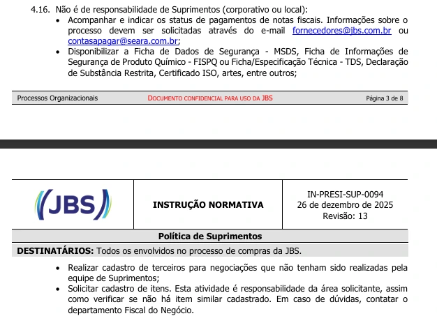

O que preciso para abrir um chamado?
- É obrigatório apresentar um Memorial Descritivo detalhado, com a demanda e o escopo do contrato a ser firmado claramente especificados.
- Chamados sem um escopo claro serão cancelados.
Chamados não aceitos
- Chamados para a contratação de serviços pontuais, ou seja, não contínuos.
- Chamados com Memorial Descritivo incompleto e/ou sem escopo detalhado.
- Nos chamados em que o solicitante indicar um fornecedor de escolha técnica, o orçamento desse fornecedor deverá ser anexado ao Memorial Descritivo.
Cadastro de fornecedores
Os fornecedores indicados pelo solicitante devem estar cadastrados no SPR para que seja possível dar sequência ao contrato, conforme a política apresentada abaixo.
